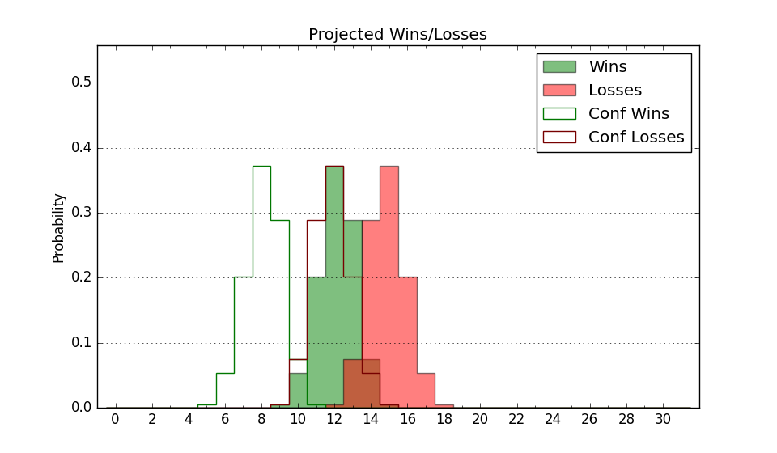

| Home | Game Probabilities | Conferences | Preseason Predictions | Odds Charts | NCAA Tournament |
| City: | Edinburg, Texas | |
| Conference: | Southland (8th)
| |
| Record: | 5-9 (Conf) 9-12 (Overall) | |
| Ratings: | Comp.: -6.4 (233rd) Net: -6.2 (231st) Off: 104.7 (197th) Def: 110.9 (263rd) SoR: 0.0 (127th) |
| Remaining | ||||||
|---|---|---|---|---|---|---|
| Date | Opponent | Win Prob | Pred. | |||
| 2/15 | Houston Baptist (264) | 71.2% | W 77-71 | |||
| 2/17 | Incarnate Word (253) | 69.4% | W 79-73 | |||
| 2/22 | @ Nicholls St. (176) | 24.8% | L 73-82 | |||
| 2/24 | @ McNeese St. (67) | 6.9% | L 64-82 | |||
| 3/1 | New Orleans (329) | 83.8% | W 86-73 | |||
| 3/3 | Southeastern Louisiana (199) | 56.9% | W 75-73 | |||
| Previous | Game Score | |||||
| Date | Opponent | Win Prob | Result | Off | Def | Net |
| 11/4 | @Nebraska (49) | 4.4% | L 67-87 | -5.4 | 5.5 | 0.1 |
| 11/6 | @Creighton (33) | 3.1% | L 86-99 | 23.5 | -6.6 | 16.9 |
| 11/15 | (N) Charleston Southern (266) | 58.2% | W 86-76 | -3.7 | 7.6 | 3.9 |
| 11/16 | (N) Tennessee Tech (274) | 60.7% | W 83-58 | 9.9 | 22.0 | 31.9 |
| 11/18 | @Wisconsin (17) | 2.0% | L 84-87 | 31.0 | 2.8 | 33.8 |
| 11/25 | Le Moyne (352) | 88.9% | W 97-77 | 8.1 | -1.5 | 6.6 |
| 12/5 | Stephen F. Austin (229) | 63.7% | W 68-65 | -7.3 | 3.5 | -3.8 |
| 12/7 | Lamar (201) | 57.2% | L 52-84 | -27.9 | -21.8 | -49.7 |
| 12/18 | Southern Utah (273) | 73.9% | W 78-73 | -2.6 | 0.3 | -2.3 |
| 1/4 | @New Orleans (329) | 60.3% | W 76-64 | 8.3 | 8.6 | 16.9 |
| 1/6 | @Southeastern Louisiana (199) | 27.9% | L 75-79 | 9.9 | -4.5 | 5.4 |
| 1/11 | @Tex A&M Corpus Chris (166) | 23.6% | L 74-79 | 12.4 | -11.3 | 1.0 |
| 1/13 | Texas A&M Commerce (326) | 83.3% | W 57-55 | -22.3 | 2.1 | -20.2 |
| 1/18 | @Houston Baptist (264) | 42.1% | L 57-66 | -28.1 | 15.5 | -12.6 |
| 1/20 | @Incarnate Word (253) | 40.0% | W 85-78 | 17.3 | 0.4 | 17.7 |
| 1/25 | McNeese St. (67) | 20.1% | L 63-93 | -6.8 | -26.5 | -33.3 |
| 1/27 | Nicholls St. (176) | 52.9% | L 75-82 | -3.5 | -6.2 | -9.7 |
| 2/1 | Tex A&M Corpus Chris (166) | 51.2% | W 83-73 | 1.3 | 12.7 | 14.0 |
| 2/3 | @Northwestern St. (228) | 33.7% | L 63-79 | -16.2 | 1.5 | -14.6 |
| 2/8 | @Lamar (201) | 28.2% | L 68-70 | 3.5 | 5.5 | 9.1 |
| 2/10 | @Stephen F. Austin (229) | 34.0% | L 75-85 | 5.2 | -12.3 | -7.1 |
| Stats & Trends | |||||
|---|---|---|---|---|---|
| Current | Day | Week | Month | Season | |
| Composite | -6.4 | -0.0 | -0.0 | -1.7 | +4.6 |
| Comp Rank | 233 | +1 | +1 | -25 | +47 |
| Net Efficiency | -6.2 | -0.0 | -0.1 | -2.9 | -- |
| Net Rank | 231 | +1 | +2 | -35 | -- |
| Off Efficiency | 104.7 | -0.1 | +0.3 | -3.0 | -- |
| Off Rank | 197 | -5 | -1 | -60 | -- |
| Def Efficiency | 110.9 | +0.1 | -0.5 | +0.2 | -- |
| Def Rank | 263 | -- | -6 | +17 | -- |
| SoS Rank | 210 | +3 | +20 | +48 | -- |
| Exp. Wins | 12.1 | -0.0 | -0.7 | -1.8 | +0.2 |
| Exp. Conf Wins | 8.1 | -0.0 | -0.7 | -1.8 | -1.4 |
| Conf Champ Prob | 0.0 | -- | -- | -0.1 | -1.8 |

| Advanced Stats | ||
|---|---|---|
| Stat | Value | Rank |
| Off Eff FG % | 0.510 | 161 |
| Off Ast Ratio | 0.152 | 132 |
| Off ORB% | 0.301 | 145 |
| Off TO Rate | 0.160 | 265 |
| Off FT Ratio | 0.250 | 350 |
| Def Eff FG % | 0.533 | 260 |
| Def Ast Ratio | 0.154 | 243 |
| Def ORB% | 0.323 | 307 |
| Def TO Rate | 0.151 | 152 |
| Def FT Ratio | 0.315 | 139 |